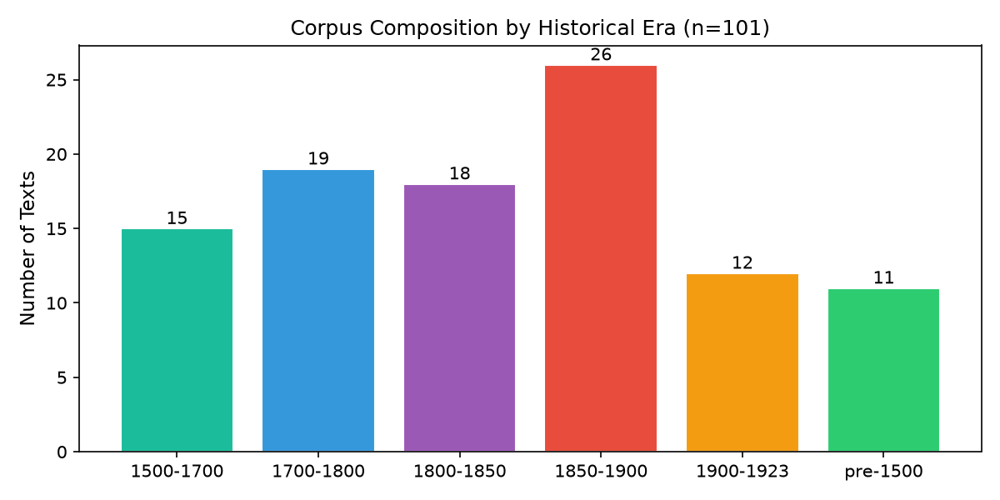
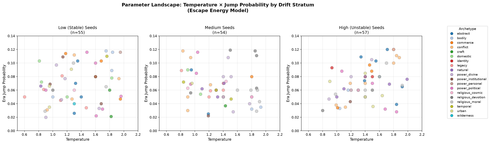
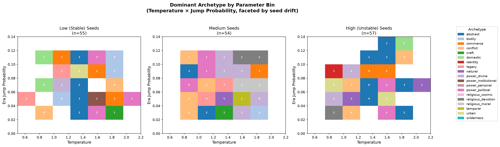
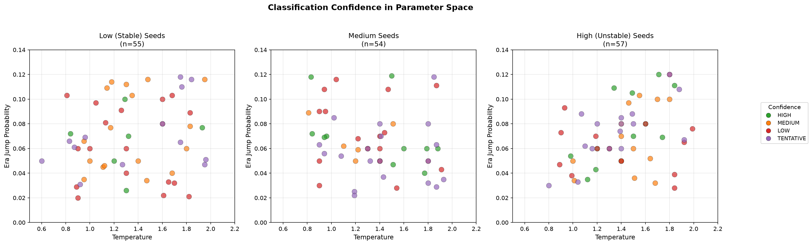

Corpus
101 public-domain texts from Project Gutenberg, stratified into six historical eras from medieval to early modernist. Each era gets its own word vectors via co-occurrence matrices with PPMI weighting and 50-dimensional SVD reduction. From these vectors we compute drift — how far a word's meaning shifts across centuries — and drop seeds into the landscape to see where they wander.

Figure 1: Corpus composition by era. The Industrial Age (1850–1900) is most heavily represented, reflecting Gutenberg's catalog bias toward Victorian and Edwardian fiction.
The Escape Energy Model
We asked: does a word's semantic history constrain what it means when released into a generative space? The answer is not deterministic — temperature and randomness matter — but it is structured.
Escape energy. A seed word sits in a semantic "basin" defined by its contextual neighbours in each era. Low temperature keeps the walk trapped near the basin floor. High temperature provides kinetic energy to escape — but which territory it escapes into depends on the basin's shape.
The twist: stable seeds (low drift) have deeper basins. Temperature's archetype-biasing effect is strongest for them (Cramer's V = 0.676) and weakest for unstable seeds (V = 0.471), which are already wandering on semantic ridges. Drift and temperature interact — they are not independent controls.

Figure 2: Parameter landscape — archetype coloured by drift stratum. Low-drift seeds at high temperature (top-right of each panel) scatter across the widest range of archetypes. High-drift seeds cluster densely regardless of parameters.

Figure 3: Dominant archetype by temperature × jump-probability bin. Low-drift seeds show clearer archetype territories; high-drift seeds are more mixed. The "basin" structure is visible only when the seed is stable enough to have one.

Figure 4: Classification confidence across parameter space. TENTATIVE classifications concentrate in the high-drift + high-temperature quadrant — exactly where the escape energy model predicts maximum unpredictability.
Example Dreams
Three dreams drawn from the corpus, showing how the same engine with different seeds and parameters produces different semantic territories.
Findings in Brief
- Gravity-well hypothesis rejected. Seed semantics do not constrain individual dream archetypes above chance. Dreams are genuinely emergent — but emergent from a structured landscape, not from pure noise.
- Parameters bias, they do not determine. Temperature skews archetype probability (kinetic bias model), yet predictive accuracy for any single dream remains below baseline. The landscape is probabilistic, not categorical.
- Drift × temperature interaction. The effect of temperature reverses by stratum: low-drift + high temp → personal agency/craft; high-drift + high temp → political/abstract. Stable seeds have deep basins; unstable seeds are already on ridges.
- Keyword-IDF weighting eliminated structural bias. Raw keyword counting correlated r=+0.824 with keyword-list length. IDF weighting dropped this to r=+0.078 while reducing unclassifiable dreams from 42% to 0%.
- The "chaos" archetype dissolved. Renamed to wilderness after analysis showed none of its dreams were about structural chaos. The label had captured thematic desolation, not walk behaviour.
Status
Phase 1 (corpus, vectors, drift) is complete. Phase 2 (dream engine, reflection pipeline, taxonomy, statistical validation) is complete through the escape-energy model and parameter landscape visualization. Next: a logistic-regression formalization of the drift × temperature interaction, and expansion of this site into a browsable dream gallery.